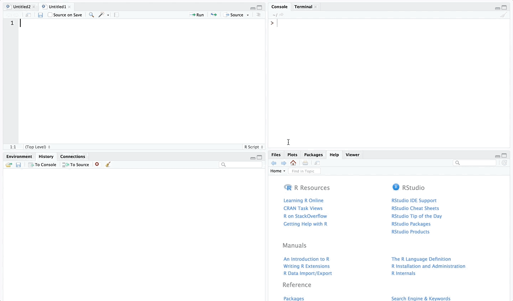
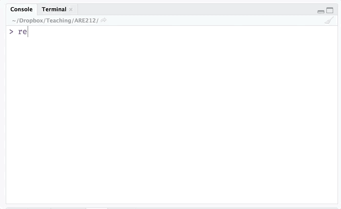

Section 1: Getting started with R
What you will need
- Working and up-to-date installations of R and RStudio
- Data files “auto.csv” and “auto.dta”. Download a zipped folder here.
- An internet connection
- Optional: A healthy source of caffeine
Summary
In this section we will dive into R. We start by installing and loading three useful packages (dplyr, haven, readr, and pacman). We then load two datasets and begin summarizing and manipulating them. Finally, we’ll make our first plots.
Packages in R
Open RStudio. Make sure you are running the most recent versions of R and RStudio.1
While the base R installation helpful/powerful, R’s true potential comes from combining the core installation with the many, many packages generated through (open-source) collaboration (see CRAN’s list of packages2).
Installing packages
You can check which packages are currently installed by using the function installed.packages(). Ready to run your first function? Type installed.packages() into the R console and hit return. That’s a lot of information. Don’t worry about it for now.
Alternatively (and more easily), you can check the Packages tab inside of RStudio.
 The checked boxes denote the packages that are currently loaded.
Now, let’s install a few packages that will prove useful this semester. We will use the creatively named install.packages() function. You just need to give the function that name(s) of the package(s) you want to install.
# Install the package named "dplyr"
install.packages("dplyr")
# Install the packages named "haven" and "readr"
install.packages(c("haven", "readr"))A few things to notice here:
- You need an internet connection.
- The name of the function
install.packages()is plural regardless of the number of packages. - Each package’s name is surrounded by quotes (e.g.,
"haven"). These quotation marks are how R knows the difference between characters/strings and objects (objects hold values). R generally does not care whether you use single quote ('') or double quotes (""), but you should be consistent. If you ask me, I say double quotes. - We can create a vector of packages using the combine function
c(). Example:c(1, 2, 3)is a three-element vector whose elements are1,2, and3. Similarly,c("haven", "readr")is a two-element vector whose elements are the"haven"and"readr". Vectors are a big deal in R. - The hashtag (
#) is the symbol that creates comments in R.
Loading packages
To check that the installations were successful, we will load the packages that we installed above.
R uses the library() function to load a package (we give the name of the package as the argument to the function).3
library(dplyr)##
## Attaching package: 'dplyr'## The following objects are masked from 'package:stats':
##
## filter, lag## The following objects are masked from 'package:base':
##
## intersect, setdiff, setequal, unionlibrary(haven)## Warning: package 'haven' was built under R version 3.4.3library(readr)Notice that we did not need to call the packages with quotations around their names (though it would still work).
Package management with pacman
Let’s install another package: the pacman package.
# Install the 'pacman' package
install.packages("pacman")Now load it…
# Load the 'pacman' package
library(pacman)In addition to an excellent name, the pacman package is very meta: it’s a package to manage packages. You can use it to install, load, unload, and update your R packages. Plus it really streamlines your code. Rather than having to type library(...) every time you want to load a package, you can use pacman’s handy p_load() function. For instance,
library(dplyr)
library(haven)
library(readr)becomes
p_load(dplyr, haven, readr)Another great feature of p_load(): if you try to load a package that is not installed on your machine, p_load() install the package for you, rather than throwing an error. For instance, let’s install and load one final package named ggplot2.
p_load(ggplot2)Installed and loaded. That’s service!
Loading data
Loading a dataset in R requires three things:
- The path of the data file (where the data exist on your computer)
- The name of the data file
- The proper function for the type of dataset (e.g., we use different functions for .csv and .dta files)
dir()
The function dir() allows you to see contents of a folder. dir() can help when you forget the name of the file you want. To see the contents of a folder, give the folder’s file path to dir():
# Look inside my ARE212 folder (dir_class stores the path)
dir(dir_class)## [1] "_site.yml" "analyticstracking.php"
## [3] "contact.html" "contact.Rmd"
## [5] "courseInfo.html" "courseInfo.Rmd"
## [7] "footer.html" "futureNotes.html"
## [9] "futureNotes.Rmd" "htmlScript.R"
## [11] "Images" "index.html"
## [13] "index.Rmd" "LatexKnitr"
## [15] "latexKnitr_files" "latexKnitr.html"
## [17] "latexKnitr.Rmd" "notes.html"
## [19] "notes.Rmd" "Papers"
## [21] "pdfScript.R" "pdfScript.spin.R"
## [23] "pdfScript.spin.Rmd" "README.html"
## [25] "README.md" "resources.html"
## [27] "resources.Rmd" "Section00"
## [29] "section00.html" "section00.Rmd"
## [31] "Section01" "section01_files"
## [33] "section01.html" "section01.Rmd"
## [35] "Section01.zip" "Section02"
## [37] "section02.html" "section02.Rmd"
## [39] "Section02.zip" "Section03"
## [41] "section03_cache" "section03_files"
## [43] "section03.html" "section03.Rmd"
## [45] "Section03.zip" "Section04"
## [47] "section04_cache" "section04_files"
## [49] "section04.html" "section04.Rmd"
## [51] "Section04.zip" "Section05"
## [53] "section05_cache" "section05_files"
## [55] "section05.html" "section05.Rmd"
## [57] "Section05.zip" "Section06"
## [59] "section06_cache" "section06_files"
## [61] "section06.html" "section06.Rmd"
## [63] "Section06.zip" "Section07"
## [65] "section07_cache" "section07_files"
## [67] "section07.html" "section07.Rmd"
## [69] "Section07.zip" "Section08"
## [71] "section08_cache" "section08_files"
## [73] "section08.html" "section08.Rmd"
## [75] "Section08.zip" "Section09"
## [77] "section09_files" "section09.html"
## [79] "section09.Rmd" "Section09.zip"
## [81] "Section10" "section10_files"
## [83] "section10.html" "section10.Rmd"
## [85] "Section10.zip" "Section11"
## [87] "section11_cache" "section11_files"
## [89] "section11.html" "section11.Rmd"
## [91] "site_libs" "Spring2017"
## [93] "syllabi.html" "syllabi.Rmd"
## [95] "syllabus2017.pdf" "syllabus2018.pdf"
## [97] "TODO.html" "TODO.md"
## [99] "update.bash"# Look inside my section 1 folder (dir_section1 stores the path)
dir(dir_section1)## [1] "auto.csv" "auto.dta" "README.md" "section01.pdf"
## [5] "section01.R"You can see there are a few files of interest in the section 1 folder—specifically, auto.csv and auto.dta.6
Recall that dir_section1 is an object that holds a value representing a file path, i.e.,
dir_section1## [1] "/Users/edwardarubin/Dropbox/Teaching/ARE212/Section01/"Notice that we get the same result if we feed dir() object’s name or its value, since R is evaluating the object:
# The object
dir(dir_section1)## [1] "auto.csv" "auto.dta" "README.md" "section01.pdf"
## [5] "section01.R"# The object's value
dir("/Users/edwardarubin/Dropbox/Teaching/ARE212/Section01/")## [1] "auto.csv" "auto.dta" "README.md" "section01.pdf"
## [5] "section01.R"Functions to load files
There are a lot of ways to load (data) files in R. In this class, we will mostly stick to the packages readr and haven—in addition to R’s base functions. The readr package offers functions for mostly for reading delimited data files like CSVs, TSVs, and fixed-width files. The haven package offers functions for reading data files outputted from other statistical software like Stata, SPSS (or PSPP), and SAS. R also has its own file types (i.e., .rds and .rdata). Eventually, we will also talk about loading spatial data (e.g., shapefiles and various rasters).
Let’s start by reading the data stored in the auto.dta file. For this task, we’ll use the read_dta() funtion from the haven package. The read_dta() function needs only one argument: the file (including the path necessary to reach the file).
Note: To learn more about a function and the arguments it accepts, you can
- Press tab (in RStudio) after typing the function’s name.
- Type a question mark and the function’s name into the console, e.g.,
?read_dta(and then hit return).
Example:

Enough talk. Let’s finally load the file.
# Load the .dta file
car_data <- read_dta(paste0(dir_section1, "auto.dta"))The <- operator is central to everything you do in R. It assigns the value(s) on the right-hand side of the arrow to the name on the left-hand side. When reading R code aloud, people often replace the arrow with “gets”. The main thing to understand is that the contents of “auto.dta” are now assigned to the name car_data. To see this, simply type the name into the console (a bad idea with really big datasets, but this dataset is not big).
car_data## # A tibble: 74 x 12
## make price mpg rep78 headroom trunk weight length turn
## <chr> <dbl> <dbl> <dbl> <dbl> <dbl> <dbl> <dbl> <dbl>
## 1 AMC Concord 4099 22 3 2.5 11 2930 186 40
## 2 AMC Pacer 4749 17 3 3.0 11 3350 173 40
## 3 AMC Spirit 3799 22 NA 3.0 12 2640 168 35
## 4 Buick Century 4816 20 3 4.5 16 3250 196 40
## 5 Buick Electra 7827 15 4 4.0 20 4080 222 43
## 6 Buick LeSabre 5788 18 3 4.0 21 3670 218 43
## 7 Buick Opel 4453 26 NA 3.0 10 2230 170 34
## 8 Buick Regal 5189 20 3 2.0 16 3280 200 42
## 9 Buick Riviera 10372 16 3 3.5 17 3880 207 43
## 10 Buick Skylark 4082 19 3 3.5 13 3400 200 42
## # ... with 64 more rows, and 3 more variables: displacement <dbl>,
## # gear_ratio <dbl>, foreign <dbl+lbl>If we instead had a CSV file—which we do—we could use the function read_csv() from the package readr to load the file.7
# Load the .csv file
car_data <- read_csv(paste0(dir_section1, "auto.csv"))## Parsed with column specification:
## cols(
## make = col_character(),
## price = col_double(),
## mpg = col_double(),
## rep78 = col_double(),
## headroom = col_double(),
## trunk = col_double(),
## weight = col_double(),
## length = col_double(),
## turn = col_double(),
## displacement = col_double(),
## gear_ratio = col_double(),
## foreign = col_integer()
## )# See that it looks the same as above
car_data## # A tibble: 74 x 12
## make price mpg rep78 headroom trunk weight length turn
## <chr> <dbl> <dbl> <dbl> <dbl> <dbl> <dbl> <dbl> <dbl>
## 1 AMC Concord 4099 22 3 2.5 11 2930 186 40
## 2 AMC Pacer 4749 17 3 3.0 11 3350 173 40
## 3 AMC Spirit 3799 22 NaN 3.0 12 2640 168 35
## 4 Buick Century 4816 20 3 4.5 16 3250 196 40
## 5 Buick Electra 7827 15 4 4.0 20 4080 222 43
## 6 Buick LeSabre 5788 18 3 4.0 21 3670 218 43
## 7 Buick Opel 4453 26 NaN 3.0 10 2230 170 34
## 8 Buick Regal 5189 20 3 2.0 16 3280 200 42
## 9 Buick Riviera 10372 16 3 3.5 17 3880 207 43
## 10 Buick Skylark 4082 19 3 3.5 13 3400 200 42
## # ... with 64 more rows, and 3 more variables: displacement <dbl>,
## # gear_ratio <dbl>, foreign <int>Note that you do not have to paste the directory onto the file name if you are already in the file’s directory (R reasonably defaults to looking in the current directory). In my case, I just need to tell R to go to the Section01 folder, where my auto.csv file lives.
read_csv("Section01/auto.csv")## Parsed with column specification:
## cols(
## make = col_character(),
## price = col_double(),
## mpg = col_double(),
## rep78 = col_double(),
## headroom = col_double(),
## trunk = col_double(),
## weight = col_double(),
## length = col_double(),
## turn = col_double(),
## displacement = col_double(),
## gear_ratio = col_double(),
## foreign = col_integer()
## )## # A tibble: 74 x 12
## make price mpg rep78 headroom trunk weight length turn
## <chr> <dbl> <dbl> <dbl> <dbl> <dbl> <dbl> <dbl> <dbl>
## 1 AMC Concord 4099 22 3 2.5 11 2930 186 40
## 2 AMC Pacer 4749 17 3 3.0 11 3350 173 40
## 3 AMC Spirit 3799 22 NaN 3.0 12 2640 168 35
## 4 Buick Century 4816 20 3 4.5 16 3250 196 40
## 5 Buick Electra 7827 15 4 4.0 20 4080 222 43
## 6 Buick LeSabre 5788 18 3 4.0 21 3670 218 43
## 7 Buick Opel 4453 26 NaN 3.0 10 2230 170 34
## 8 Buick Regal 5189 20 3 2.0 16 3280 200 42
## 9 Buick Riviera 10372 16 3 3.5 17 3880 207 43
## 10 Buick Skylark 4082 19 3 3.5 13 3400 200 42
## # ... with 64 more rows, and 3 more variables: displacement <dbl>,
## # gear_ratio <dbl>, foreign <int>Playing with data
You now know how to navigate your computer and load data. You might want to do something with those data.
Exploring the data
Let’s print the data into the console again.
car_data## # A tibble: 74 x 12
## make price mpg rep78 headroom trunk weight length turn
## <chr> <dbl> <dbl> <dbl> <dbl> <dbl> <dbl> <dbl> <dbl>
## 1 AMC Concord 4099 22 3 2.5 11 2930 186 40
## 2 AMC Pacer 4749 17 3 3.0 11 3350 173 40
## 3 AMC Spirit 3799 22 NaN 3.0 12 2640 168 35
## 4 Buick Century 4816 20 3 4.5 16 3250 196 40
## 5 Buick Electra 7827 15 4 4.0 20 4080 222 43
## 6 Buick LeSabre 5788 18 3 4.0 21 3670 218 43
## 7 Buick Opel 4453 26 NaN 3.0 10 2230 170 34
## 8 Buick Regal 5189 20 3 2.0 16 3280 200 42
## 9 Buick Riviera 10372 16 3 3.5 17 3880 207 43
## 10 Buick Skylark 4082 19 3 3.5 13 3400 200 42
## # ... with 64 more rows, and 3 more variables: displacement <dbl>,
## # gear_ratio <dbl>, foreign <int>Not bad. We can see a few interesting things in this view of the dataset.
- The dataset’s is of the class
tibble(it’s like a table but with a few rules—see?tibble::tibble). - The dataset’s dimensions are 74 by 12, meaning we have 74 rows and 12 columns.
- We can also see the class of each of the columns: the make column is of “character” class, and the rest of the columns are of class “double”, with the exception of the foreign variable, which is of class “integer”.
- We get a snapshot of the dataset.
What if we just want the names of the dataset? Use the names() function.
names(car_data)## [1] "make" "price" "mpg" "rep78"
## [5] "headroom" "trunk" "weight" "length"
## [9] "turn" "displacement" "gear_ratio" "foreign"And what if we want to see the first six rows of the dataset? Use the head() function.
head(car_data)## # A tibble: 6 x 12
## make price mpg rep78 headroom trunk weight length turn
## <chr> <dbl> <dbl> <dbl> <dbl> <dbl> <dbl> <dbl> <dbl>
## 1 AMC Concord 4099 22 3 2.5 11 2930 186 40
## 2 AMC Pacer 4749 17 3 3.0 11 3350 173 40
## 3 AMC Spirit 3799 22 NaN 3.0 12 2640 168 35
## 4 Buick Century 4816 20 3 4.5 16 3250 196 40
## 5 Buick Electra 7827 15 4 4.0 20 4080 222 43
## 6 Buick LeSabre 5788 18 3 4.0 21 3670 218 43
## # ... with 3 more variables: displacement <dbl>, gear_ratio <dbl>,
## # foreign <int>What if we want to see the first 11 rows of the dataset? Use the head() function with its n argument.
head(car_data, n = 11)## # A tibble: 11 x 12
## make price mpg rep78 headroom trunk weight length turn
## <chr> <dbl> <dbl> <dbl> <dbl> <dbl> <dbl> <dbl> <dbl>
## 1 AMC Concord 4099 22 3 2.5 11 2930 186 40
## 2 AMC Pacer 4749 17 3 3.0 11 3350 173 40
## 3 AMC Spirit 3799 22 NaN 3.0 12 2640 168 35
## 4 Buick Century 4816 20 3 4.5 16 3250 196 40
## 5 Buick Electra 7827 15 4 4.0 20 4080 222 43
## 6 Buick LeSabre 5788 18 3 4.0 21 3670 218 43
## 7 Buick Opel 4453 26 NaN 3.0 10 2230 170 34
## 8 Buick Regal 5189 20 3 2.0 16 3280 200 42
## 9 Buick Riviera 10372 16 3 3.5 17 3880 207 43
## 10 Buick Skylark 4082 19 3 3.5 13 3400 200 42
## 11 Cad. Deville 11385 14 3 4.0 20 4330 221 44
## # ... with 3 more variables: displacement <dbl>, gear_ratio <dbl>,
## # foreign <int>And for the last 7 rows of the dataset? Use the tail() function with its n argument.
tail(car_data, n = 7)## # A tibble: 7 x 12
## make price mpg rep78 headroom trunk weight length turn
## <chr> <dbl> <dbl> <dbl> <dbl> <dbl> <dbl> <dbl> <dbl>
## 1 Toyota Corolla 3748 31 5 3.0 9 2200 165 35
## 2 Toyota Corona 5719 18 5 2.0 11 2670 175 36
## 3 VW Dasher 7140 23 4 2.5 12 2160 172 36
## 4 VW Diesel 5397 41 5 3.0 15 2040 155 35
## 5 VW Rabbit 4697 25 4 3.0 15 1930 155 35
## 6 VW Scirocco 6850 25 4 2.0 16 1990 156 36
## 7 Volvo 260 11995 17 5 2.5 14 3170 193 37
## # ... with 3 more variables: displacement <dbl>, gear_ratio <dbl>,
## # foreign <int>RStudio also has a nice—though sometimes slow—data viewer. You can access the data viewer through the RStudi GUI or through the View() function, e.g., View(car_data).
Summarizing the data
To make a quick summary of your dataset, you can use the summary() function.
summary(car_data)## make price mpg rep78
## Length:74 Min. : 3291 Min. :12.00 Min. :1.000
## Class :character 1st Qu.: 4220 1st Qu.:18.00 1st Qu.:3.000
## Mode :character Median : 5006 Median :20.00 Median :3.000
## Mean : 6165 Mean :21.30 Mean :3.406
## 3rd Qu.: 6332 3rd Qu.:24.75 3rd Qu.:4.000
## Max. :15906 Max. :41.00 Max. :5.000
## NA's :5
## headroom trunk weight length
## Min. :1.500 Min. : 5.00 Min. :1760 Min. :142.0
## 1st Qu.:2.500 1st Qu.:10.25 1st Qu.:2250 1st Qu.:170.0
## Median :3.000 Median :14.00 Median :3190 Median :192.5
## Mean :2.993 Mean :13.76 Mean :3019 Mean :187.9
## 3rd Qu.:3.500 3rd Qu.:16.75 3rd Qu.:3600 3rd Qu.:203.8
## Max. :5.000 Max. :23.00 Max. :4840 Max. :233.0
##
## turn displacement gear_ratio foreign
## Min. :31.00 Min. : 79.0 Min. :2.190 Min. :0.0000
## 1st Qu.:36.00 1st Qu.:119.0 1st Qu.:2.730 1st Qu.:0.0000
## Median :40.00 Median :196.0 Median :2.955 Median :0.0000
## Mean :39.65 Mean :197.3 Mean :3.015 Mean :0.2973
## 3rd Qu.:43.00 3rd Qu.:245.2 3rd Qu.:3.353 3rd Qu.:1.0000
## Max. :51.00 Max. :425.0 Max. :3.890 Max. :1.0000
## However, we often just want to know about one variable. How do you grab a single variable in R? Use the $, of course. Specifically, type the name of the dataset, followed by $, followed by the name of the variable. Again, RStudio’s autocompletion using tab is your best friend here.
To grab the price variable (named price) from the car_data dataset, we type car_data$price. And to summarize the price variable:
summary(car_data$price)## Min. 1st Qu. Median Mean 3rd Qu. Max.
## 3291 4220 5006 6165 6332 15906Manipulating the data
select()
Now let’s move on to manipulating our dataset. The package dplyr offers a lot of help in manipulating data. dplyr is built on the paradigm of using verbs as actions on the data—for instance, select() variables and then summarize() them.
First, let’s say we only care about a subset of the variables (e.g price, mpg, weight, and length) and don’t feel like hanging on to the others. You could complete this task with R’s built-in subset() function, but let’s instead use the select() function from dplyr. All you need to do is give select() the name of the dataset (car_data) and the names of the variables that we want to keep. dplyr (and some other functions in R) uses what is called non-standard evaluation, which means you do not need to put quotes around the variable names.8
# Select our desired variables; define as car_sub
car_sub <- select(car_data, price, mpg, weight, length)
# Print the dataset
car_sub## # A tibble: 74 x 4
## price mpg weight length
## <dbl> <dbl> <dbl> <dbl>
## 1 4099 22 2930 186
## 2 4749 17 3350 173
## 3 3799 22 2640 168
## 4 4816 20 3250 196
## 5 7827 15 4080 222
## 6 5788 18 3670 218
## 7 4453 26 2230 170
## 8 5189 20 3280 200
## 9 10372 16 3880 207
## 10 4082 19 3400 200
## # ... with 64 more rowsYou can see that we still have 74 rows but only four columns.
Alternatively, you can choose which variables you would like to exclude from a dataset by placing a negative sign (dash) in front of the name
select(car_data, -price, -mpg, -weight, -length)## # A tibble: 74 x 8
## make rep78 headroom trunk turn displacement gear_ratio
## <chr> <dbl> <dbl> <dbl> <dbl> <dbl> <dbl>
## 1 AMC Concord 3 2.5 11 40 121 3.58
## 2 AMC Pacer 3 3.0 11 40 258 2.53
## 3 AMC Spirit NaN 3.0 12 35 121 3.08
## 4 Buick Century 3 4.5 16 40 196 2.93
## 5 Buick Electra 4 4.0 20 43 350 2.41
## 6 Buick LeSabre 3 4.0 21 43 231 2.73
## 7 Buick Opel NaN 3.0 10 34 304 2.87
## 8 Buick Regal 3 2.0 16 42 196 2.93
## 9 Buick Riviera 3 3.5 17 43 231 2.93
## 10 Buick Skylark 3 3.5 13 42 231 3.08
## # ... with 64 more rows, and 1 more variables: foreign <int>arrange()
We often want to arrange our dataset by one or more columns. For this task, dplyr offers the arrange() function. The notation is similar to that of select: the data object’s name followed by the variables with with you would like to arrange the object. Let’s arrange by price and mpg. The second dimension of sorting here is only for demonstration (it’s pointless in the actually arrangement).
arrange(car_sub, price, mpg)## # A tibble: 74 x 4
## price mpg weight length
## <dbl> <dbl> <dbl> <dbl>
## 1 3291 20 2830 195
## 2 3299 29 2110 163
## 3 3667 24 2750 179
## 4 3748 31 2200 165
## 5 3798 35 2050 164
## 6 3799 22 2640 168
## 7 3829 22 2580 169
## 8 3895 26 1830 142
## 9 3955 19 3430 197
## 10 3984 30 2120 163
## # ... with 64 more rowsHaving used the arrange() function on our data, what happens if we view the dataset now?
car_sub## # A tibble: 74 x 4
## price mpg weight length
## <dbl> <dbl> <dbl> <dbl>
## 1 4099 22 2930 186
## 2 4749 17 3350 173
## 3 3799 22 2640 168
## 4 4816 20 3250 196
## 5 7827 15 4080 222
## 6 5788 18 3670 218
## 7 4453 26 2230 170
## 8 5189 20 3280 200
## 9 10372 16 3880 207
## 10 4082 19 3400 200
## # ... with 64 more rowsIt is no longer arranged. This point is important. With nearly every function in R, you must assign the output of a function to an object if you want anything to change. Otherwise, you are simply printing your results to the console.
arrange() defaults to ascending ordering; if you would like descending ordering, use the desc() function on the variables that you would like to be descending.
arrange(car_sub, desc(price), mpg)## # A tibble: 74 x 4
## price mpg weight length
## <dbl> <dbl> <dbl> <dbl>
## 1 15906 21 4290 204
## 2 14500 14 3900 204
## 3 13594 12 4720 230
## 4 13466 14 3830 201
## 5 12990 14 3420 192
## 6 11995 17 3170 193
## 7 11497 12 4840 233
## 8 11385 14 4330 221
## 9 10372 16 3880 207
## 10 10371 16 4030 206
## # ... with 64 more rowssummarize()
To create more specific summaries of your data, dplyr offers the summarize() and summarize_each() functions.9 These functions are really more useful when you have grouped data, but it may be helpful to first see them here in a simpler setting. For broad summaries, check out the function summarize_all().
Imaging we want the mean and standard deviation of the price variable, we use the functions mean() and sd() in conjunction with summarize():
summarize(car_sub, mean(price), sd(price))## # A tibble: 1 x 2
## `mean(price)` `sd(price)`
## <dbl> <dbl>
## 1 6165.257 2949.496You can even provide names for the newly created summaries.
summarize(car_sub, price_mean = mean(price), price_sd = sd(price))## # A tibble: 1 x 2
## price_mean price_sd
## <dbl> <dbl>
## 1 6165.257 2949.496Because these summaries were relatively simple, we could have just typed them out…
mean(car_sub$price)## [1] 6165.257sd(car_sub$price)## [1] 2949.496Plotting the data
A final way we often play with data is by making plots. R’s default plot functions are quite simple but leave a bit to be desired with respect to aesthetics. We will cover ggplot() later in the semester, but for now, let’s make a few quick plots.
Let’s create a histogram of the cars’ milages. R’s hist() function works perfectly here. It only needs the variable of interest, but we can provide more parameters to make it pretty.
First, the plan-vanilla plot
hist(car_sub$mpg)
Now, a bit prettier. And let’s add a blue line for the median MPG (using the abline() function).
# The histogram function
hist(
# The variable for the histogram
x = car_sub$mpg,
# The main title
main = "Distribution of fuel economy",
# The x-axis label
xlab = "MPG (miles per gallon)")
# The blue vertical line at the median MPG (lwd is line width)
abline(v = median(car_sub$mpg), col = "blue", lwd = 3)
Let’s plot price and mileage. A scatterplot will work here, and R’s base plot() function will do just fine with a scatter plot. We will give it an x variable, a y variable, and the axis titles.
plot(
x = car_sub$mpg,
y = car_sub$price,
xlab = "Fuel economy (MPG)",
ylab = "Price")
Note: I really like clearly defining the arguments of functions. And I recommend it. I find it helps keep things straight, as order matters when you are not naming each argument.
Indexing
Nearly everything in R is numerically indexed. For instance, when we create a vector of numbers, as we did earlier, each element of the vector gets a numerical index (1, 2, 3, …). You can generally access the individual elements of objects using these indexes and square brackets behind the name of the object (e.g., test[2] grabs that second element of the object test).
# Create a vector
x <- c(3, 5, 7, 9)
# Grab the second element of x
x[2]## [1] 5# Grab the second and third elements of x
x[c(2, 3)]## [1] 5 7# Grab the second and third elements of x
x[2:3]## [1] 5 7# See what 2:3 does
2:3## [1] 2 3This indexing works with data objects, as well. We just have one more dimension to consider—we have rows and columns. Rows before columns, i.e., [row, column] (but we don’t actually use the words).
To grab the first row of car_sub, we put a 1 for the row index and leave the column blank.
car_sub[1, ]## # A tibble: 1 x 4
## price mpg weight length
## <dbl> <dbl> <dbl> <dbl>
## 1 4099 22 2930 186To grab the first column of car_sub, we
car_sub[, 1]## # A tibble: 74 x 1
## price
## <dbl>
## 1 4099
## 2 4749
## 3 3799
## 4 4816
## 5 7827
## 6 5788
## 7 4453
## 8 5189
## 9 10372
## 10 4082
## # ... with 64 more rowsYou can also use the name of a column as its index
car_sub[, "price"]## # A tibble: 74 x 1
## price
## <dbl>
## 1 4099
## 2 4749
## 3 3799
## 4 4816
## 5 7827
## 6 5788
## 7 4453
## 8 5189
## 9 10372
## 10 4082
## # ... with 64 more rowsWe’ll do a lot more of this indexing stuff in the future.
Fun challenge
What happens if you give the head() or tail() functions an n that is negative? Can you replicate the behavior using indexing? Can you replicate the behavior of tail() using only the function head()?
Linear algebra puzzles
Some classic10 R-meets-linear algebra puzzles for your enjoyment. They may use some R concepts that we have not yet covered.
- Let I5 be a 5 \(\times\) 5 identity matrix. Demonstrate that I5 is symmetric and idempotent using simple functions in R.
- Generate a 2 \(\times\) 2 idempotent matrix X, where X is not the identity matrix. Demonstrate that X = XX.
- Generate two random variables, x and e, of dimension n = 100 such that x, e ∼ N(0, 1). Generate a random variable y according to the data generating process \(y_i = x_i + e_i\). Show that if you regress y on x using the canned linear regression routine
lm(), then you will get an estimate of the intercept \(\beta_0\) and the coefficient on x, \(\beta_1\), such that \(\beta_0 = 0\) and \(\beta_1 = 1\). - Show that if \(\lambda_1, \lambda_2, \ldots, \lambda_5\) are the eigenvectors of a 5 \(\times\) 5 matrix A, then tr(A) = \(\sum_{i=1}^5 \lambda_i\).
If you do not have the most recent versions of R (3.4.3, a.k.a. Kite-Eating Tree) and RStudio (1.1.383), then please check out the directions in Section 0.↩
CRAN stands for [the] Comprehensive R Archive Network↩
You can also access functions within a package without loading the whole package. Let’s say we want to load the
happy()function from thefakepackage without loading the wholefakepackage. Just typefake::happy(). The double colon::is the key here. (Note: Not all functions from a package can be accessed this way.) This method also works well when packages overlap in the names that they use for functions.↩Windows users beware: when you copy the path from File Explorer, the slashes between folders may be in the wrong direction for R: you will need to either change the direction (from
\to/) or double them (from/to//).↩Note: Mac (OSX) directories tend to start with “/Users/”, while Windows paths start with the name of the drive, for instance, “C:/”. If you’re using Linux, you probably don’t need my help here.↩
The files are apparently classic Stata tutorial files.↩
If you have really big delimited files (csv, tsv, fixed, width, etc.), I recommend the
fread()(fast read) function from thedata.tablepackage. The wholedata.tablepackage is awesome and fast—it’s just a bit less beginner friendly thandplyr.↩If leaving off the quotation marks makes you uncomfortable—or is actually inhibiting your programming—each
dplyrfunction has a clone that uses standard evaluation. These standard evaluation clones have the same names as their counterparts but with an added underscore (_) at their ends (e.g.,select_()).↩If you are more comfortable with British English, you will be happy to know you can use the functions
summarise()andsummarise_each().↩By classic, I mean they’ve shown up in this class’s section notes for several years.↩